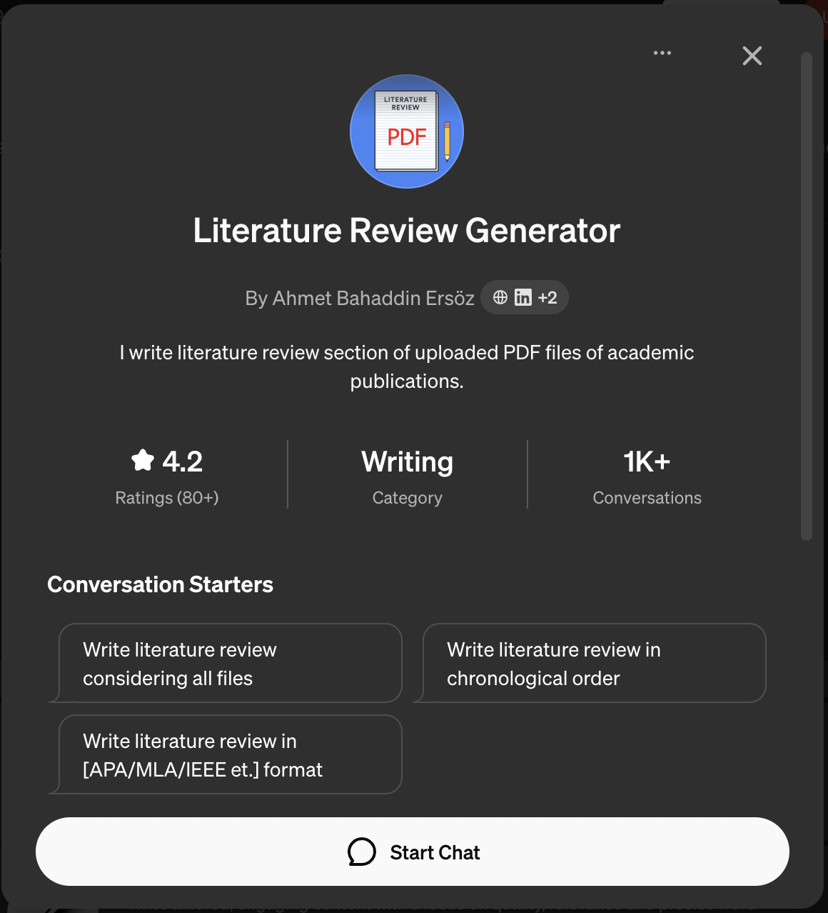
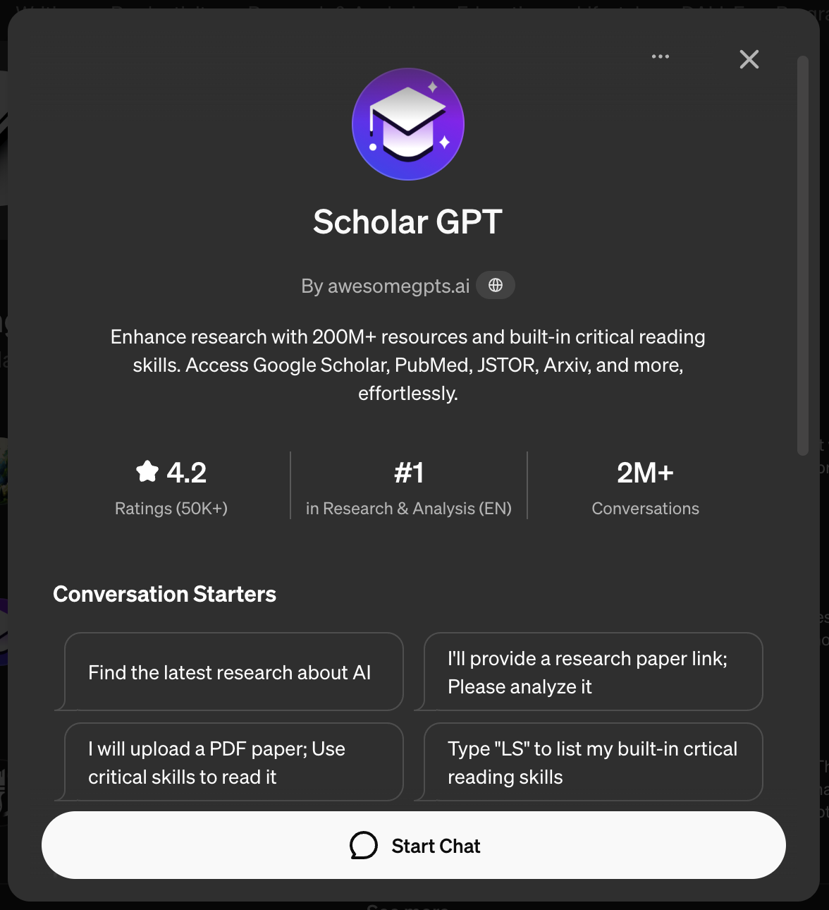
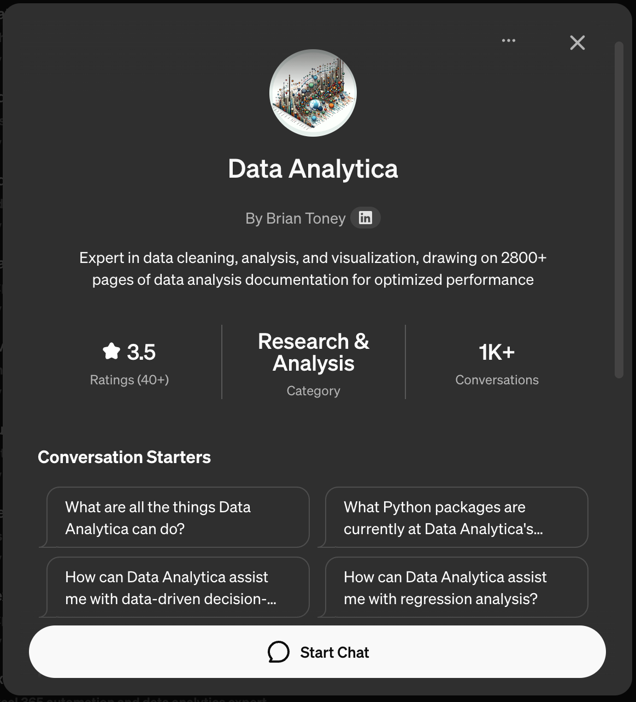
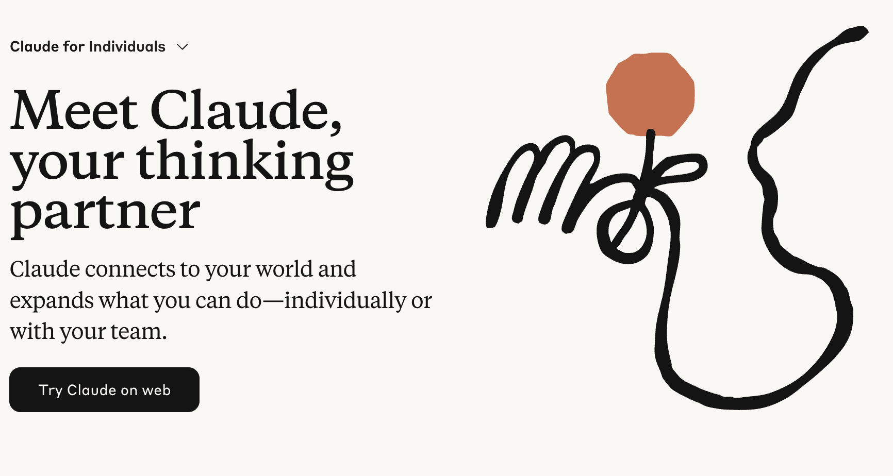
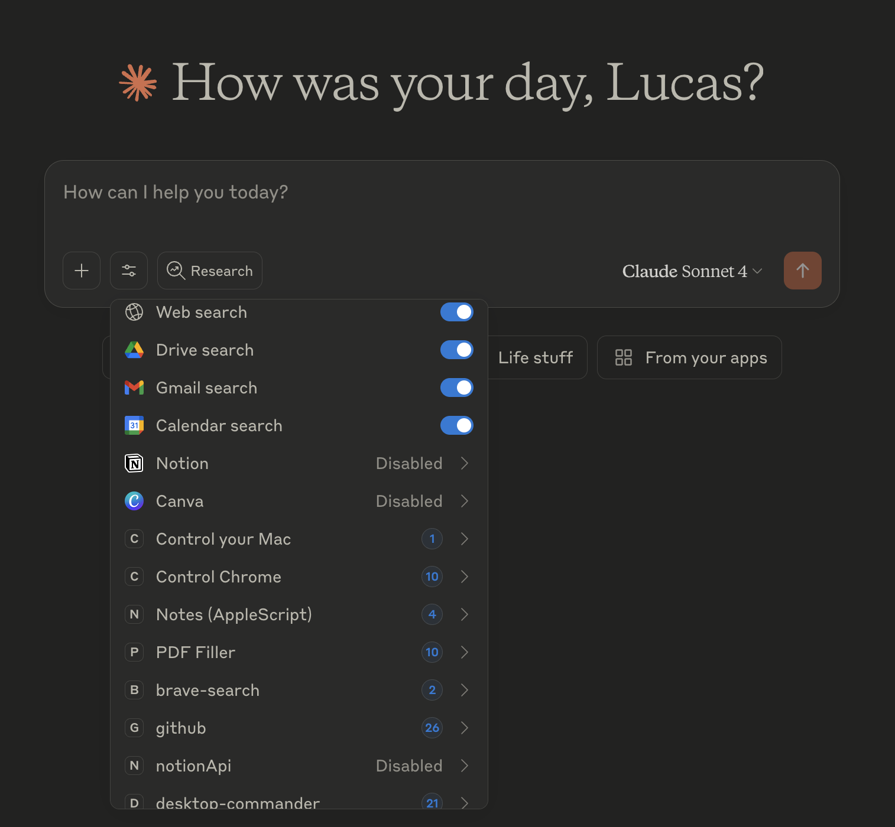
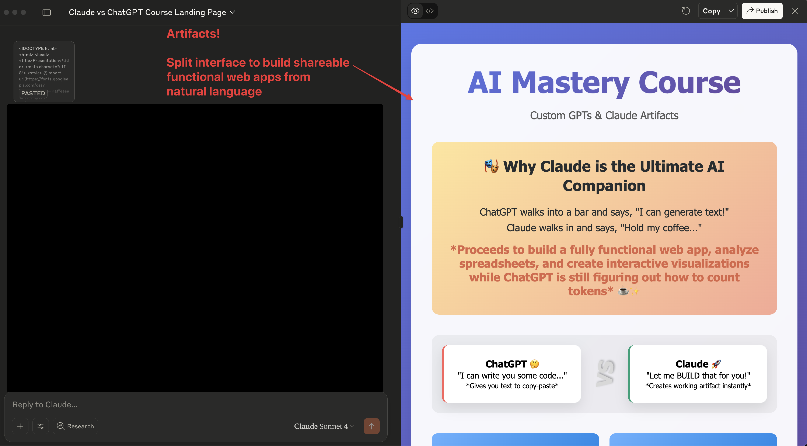
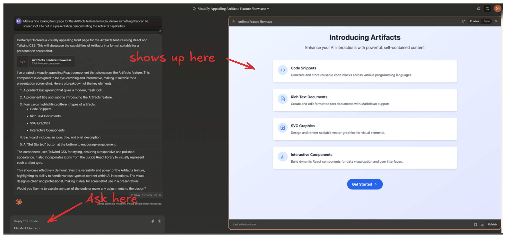
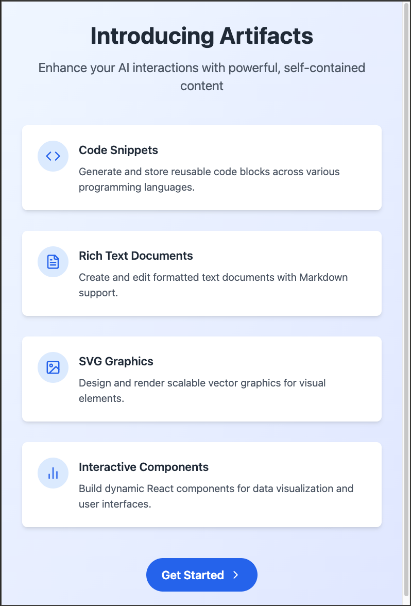

background-image: url(../assets/cover.png) --- # Table of Contents **1. Introduction to the course & learning objectives** -- **2. Custom GPT Basics ** -- **3. Application of Custom GPTs** -- **4. Introduction to Claude & Artifacts** -- **5. Application of Claude & Artifacts** --- class: center, middle # Introduction & Learning Objectives --- # In this course you will -- - Learn the basics of ChatGPT & Custom GPTs -- - Learn how to build useful Custom GPTs for automating tasks and workflows -- - Learn the basics of Claude & Artifacts -- - Learn how to use Claude, Artifacts and MCPs to build useful tools and workflows --- class: center, middle # Custom GPT Basics --- # What & Why Custom GPTs? - <span style="font-size:1.2em;">üõ†Ô∏è</span> Customizable -- - <span style="font-size:1.2em;">üì¶</span> Specialized & shareable packages -- - <span style="font-size:1.2em;">üîó</span> Connect to services -- - <span style="font-size:1.2em;">üí°</span> Use cases --- <div style="display: grid; grid-template-columns: 1fr 1fr; grid-gap: 24px; align-items: center; justify-items: center; width: 100%;"> <div>  </div> <div> <img src="../assets/coding-gpt.png" alt="Coding GPT" style="max-width: 80%; height: auto;"> </div> <div>  </div> <div>  </div> </div> --- <div style="display: grid; grid-template-columns: 1fr 1fr; grid-template-rows: 1fr 1fr; gap: 32px; align-items: center; justify-items: center; width: 100%; min-height: 500px;"> <div style="background: #f6fff6; border-radius: 18px; box-shadow: 0 2px 12px #0001; padding: 20px 10px; text-align: center; width: 95%;"> <img src="../assets/translator-of-complexity.png" alt="Translators of Complexity" style="width: 60%; margin-bottom: 12px;"> <div style="font-size: 1.15em; font-weight: 600; margin-bottom: 6px;"><span style="color: #2e7d32;">Translators of Complexity</span></div> </div> <div style="background: #f6faff; border-radius: 18px; box-shadow: 0 2px 12px #0001; padding: 20px 10px; text-align: center; width: 95%;"> <img src="../assets/hammer-gpt.png" alt="Tools" style="width: 68%; margin-bottom: 12px;"> <div style="font-size: 1.15em; font-weight: 600; margin-bottom: 6px;"><span style="color: #1565c0;">Tools</span></div> </div> <div style="background: #fff6fa; border-radius: 18px; box-shadow: 0 2px 12px #0001; padding: 20px 10px; text-align: center; width: 95%;"> <div style="font-size: 1.15em; font-weight: 600; margin-bottom: 6px;"><span style="color: #ad1457;">Agents</span></div> </div> <div style="background: #f9f6ff; border-radius: 18px; box-shadow: 0 2px 12px #0001; padding: 20px 10px; text-align: center; width: 95%;"> <div style="font-size: 1.15em; font-weight: 600; margin-bottom: 6px;"><span style="color: #6a1b9a;">Collaborators</span></div> </div> </div> # When Should You Use Custom GPTs? - When should you use them? -- - When you're writing too many edits to a system message for the general model -- - When a complex tasks involves multiple specialized prompts within the same topic -- - Using what is out there X building your own? -- - Use concrete requirements to avoid wasting time. --- class: center, middle <h1> <span style="background-color: lightgreen"> Building our First Custom GPT </span> </h1> --- class: center, middle # Custom GPT Interface Walkthrough (recap) --- background-image: url(../assets/custom-gpt-interface/custom-gpt-interface.002.jpeg) --- background-image: url(../assets/custom-gpt-interface/custom-gpt-interface.003.jpeg) --- background-image: url(../assets/custom-gpt-interface/custom-gpt-interface.004.jpeg) --- background-image: url(../assets/custom-gpt-interface/custom-gpt-interface.005.jpeg) --- background-image: url(../assets/custom-gpt-interface/custom-gpt-interface.006.jpeg) --- background-image: url(../assets/custom-gpt-interface/custom-gpt-interface.007.jpeg) --- background-image: url(../assets/custom-gpt-interface/custom-gpt-interface.008.jpeg) --- background-image: url(../assets/custom-gpt-interface/custom-gpt-interface.009.jpeg) --- background-image: url(../assets/custom-gpt-interface/custom-gpt-interface.010.jpeg) --- background-image: url(../assets/custom-gpt-interface/custom-gpt-interface.011.jpeg) --- background-image: url(../assets/custom-gpt-interface/custom-gpt-interface.012.jpeg) --- background-image: url(../assets/custom-gpt-interface/custom-gpt-interface.013.jpeg) --- background-image: url(../assets/custom-gpt-interface/custom-gpt-interface.014.jpeg) --- background-image: url(../assets/custom-gpt-interface/custom-gpt-interface.015.jpeg) --- background-image: url(../assets/custom-gpt-interface/custom-gpt-interface.016.jpeg) --- background-image: url(../assets/custom-gpt-interface/custom-gpt-interface.017.jpeg) --- background-image: url(../assets/custom-gpt-interface/custom-gpt-interface.018.jpeg) --- background-image: url(../assets/custom-gpt-interface/custom-gpt-interface.019.jpeg) --- background-image: url(../assets/custom-gpt-interface/custom-gpt-interface.020.jpeg) --- background-image: url(../assets/custom-gpt-interface/custom-gpt-interface.021.jpeg) --- background-image: url(../assets/custom-gpt-interface/custom-gpt-interface.022.jpeg) --- background-image: url(../assets/custom-gpt-interface/custom-gpt-interface.023.jpeg) --- background-image: url(../assets/custom-gpt-interface/custom-gpt-interface.024.jpeg) --- background-image: url(../assets/custom-gpt-interface/custom-gpt-interface.025.jpeg) --- background-image: url(../assets/custom-gpt-interface/custom-gpt-interface.026.jpeg) --- background-image: url(../assets/custom-gpt-interface/custom-gpt-interface.027.jpeg) --- background-image: url(../assets/custom-gpt-interface/custom-gpt-interface.028.jpeg) --- background-image: url(../assets/custom-gpt-interface/custom-gpt-interface.029.jpeg) --- background-image: url(../assets/custom-gpt-interface/custom-gpt-interface.030.jpeg) --- background-image: url(../assets/custom-gpt-interface/custom-gpt-interface.031.jpeg) --- background-image: url(../assets/custom-gpt-interface/custom-gpt-interface.032.jpeg) --- background-image: url(../assets/custom-gpt-interface/custom-gpt-interface.033.jpeg) --- background-image: url(../assets/custom-gpt-interface/custom-gpt-interface.034.jpeg) --- background-image: url(../assets/custom-gpt-interface/custom-gpt-interface.035.jpeg) --- background-image: url(../assets/custom-gpt-interface/custom-gpt-interface.036.jpeg) --- background-image: url(../assets/custom-gpt-interface/custom-gpt-interface.037.jpeg) --- background-image: url(../assets/custom-gpt-interface/custom-gpt-interface.038.jpeg) --- background-image: url(../assets/custom-gpt-interface/custom-gpt-interface.039.jpeg) --- background-image: url(../assets/custom-gpt-interface/custom-gpt-interface.040.jpeg) --- background-image: url(../assets/custom-gpt-interface/custom-gpt-interface.041.jpeg) --- background-image: url(../assets/custom-gpt-interface/custom-gpt-interface.042.jpeg) --- background-image: url(../assets/custom-gpt-interface/custom-gpt-interface.043.jpeg) --- background-image: url(../assets/custom-gpt-interface/custom-gpt-interface.044.jpeg) --- background-image: url(../assets/custom-gpt-interface/custom-gpt-interface.045.jpeg) --- background-image: url(../assets/custom-gpt-interface/custom-gpt-interface.046.jpeg) --- background-image: url(../assets/custom-gpt-interface/custom-gpt-interface.047.jpeg) --- background-image: url(../assets/custom-gpt-interface/custom-gpt-interface.048.jpeg) --- background-image: url(../assets/custom-gpt-interface/custom-gpt-interface.049.jpeg) --- background-image: url(../assets/custom-gpt-interface/custom-gpt-interface.050.jpeg) --- background-image: url(../assets/custom-gpt-interface/custom-gpt-interface.051.jpeg) --- class: center, middle <h1> <span style="background-color: lightgreen"> Demo: Building specialized GPT tutors </span> </h1> --- class: center, middle <h1> <span style="background-color: lightgreen"> Demo: Building a Custom GPT to Extract Data from PDFs </span> </h1> --- class: center, middle # Introduction to Claude & Artifacts --- # Agenda 1. What is Claude? -- 2. Capabilities -- 3. Model Options -- 4. What is Artifacts? -- 5. Use Cases --- # What is Claude? <div style="text-align: center;">  </div> --- # Capabilities Claude with the chat interface can help with: - Text and code generation <div style="text-align: center;"> <img src="../assets/2025-08-06-18-02-22.png" width="600"> </div> --- # Capabilities Claude with the chat interface can help with: - Interacting with documents <div style="text-align: center;"> <img src="../assets/2025-08-06-18-05-20.png" width="500"> </div> - <span style="color: gray;">_No image generation on the standard interface_</span> --- class: center, middle # Ok, cool...but most of these things you get with ChatGPT...so what's special about Claude? --- class: center, middle # Claude Desktop + MCPs (connectors) --- <div style="text-align: center;">  </div> --- class: center, middle # Artifacts --- <div style="text-align: center;">  </div> --- # What is Artifacts? <div style="text-align: center;">  </div> --- # What is Artifacts? - Dedicated windows displaying substantial, standalone content -- - Interactive, editable outputs separate from the main conversation -- - Represent Claude's evolution into a collaborative work environment <div style="text-align: center;"> </div> --- # Characteristics of Artifacts - Significant and self-contained (typically over 15 lines) -- - Content likely to be edited, iterated on, or reused -- - Complex pieces that stand on their own -- - Intended for reference or future use -- - You can easily build AI powered (Claude) shareable apps! --- # Types of Artifact Content <div style="text-align: center;">  </div> <span style="color: gray;">Generated with Artifacts</span> --- # Types of Artifact Content - Documents (Markdown or Plain Text) -- - Code snippets -- - Websites (single page HTML) -- - Scalable Vector Graphics (SVG) images -- - Diagrams and flowcharts -- - Interactive React components (means you can prototype real apps) --- class: center, middle <h1> <span style="background-color: lightgreen"> Claude Demo </span> </h1> --- # Artifacts Recap 1. Start or continue a conversation with Claude -- 2. Request content that typically results in an Artifact -- 3. Artifact window appears on the right side of the chat interface -- 4. Two tabs: "Code" and "Preview" -- 5. Edit code, view preview, or ask Claude for changes -- 6. Switch between Artifacts using chat controls --- # Artifacts Recap ## Editing Artifacts - Modify content in real-time -- - Ask Claude to make changes via chat -- - Non-destructive edits with version history -- - Access previous versions using the version selector --- # Artifacts Recap ## Saving and Exporting Artifacts - Copy to clipboard -- - Download as file -- - Access version history -- - Save to projects (for better organization) -- - Team sharing (for Claude Team users) --- # Artifacts Recap ## Artifacts vs. Regular Chat Responses .pull-left[ Regular Responses: - Inline text - Primarily text - Static - Typically shorter - Limited visualization ] .pull-right[ Artifacts: - Dedicated window - Multiple formats - Fully editable - Larger, complex content - Rich visualization options ] --- # Artifacts Recap ## Integration with Projects - Associate Artifacts with specific chats -- - Grant team member access for collaboration -- - Share in Project's activity feed -- - Manage complex, long-term projects efficiently --- class: center, middle # Q&A --- class: center, middle <h1> <span style="background-color: lightgreen"> Demo: Claude Desktop with MCPs Deep Dive </span> </h1> --- class: center, middle <h1> <span style="background-color: lightgreen"> Demo: Building a Personal Assistant with Claude Desktop + MCPs </span> </h1> --- class: center, middle <h1> <span style="background-color: lightgreen"> Demo: Comparing ChatGPT/Custom GPTs vs Claude/Artifacts </span> </h1>